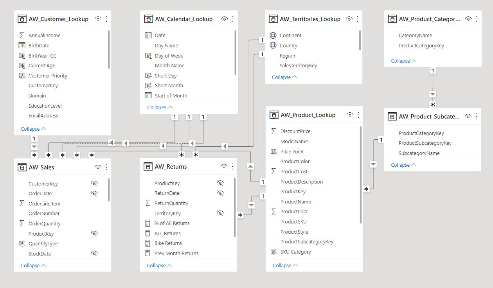

Power BI Project 1: Adventure Works
This project represents an analysis for Adventure Works, a company that sells bikes, clothing and accessories related to this sport. The report contains an Executive Summary to show the revenues, orders and returns behaviour over time, a Product Detail analysis to check if orders and revenue have been complying with the targets over time, and a Customer Detail analysis to check customers’ main features behaviour.
We first imported 8 CSV databases to create the tables in the data model:
- AW_Sales
- AW_Returns
- AW_Customer_Lookup
- AW_Calendar_Lookup
- AW_Territories_Lookup
- AW_Product_Category_Lookup
- AW_Product_Subcategory_Lookup
After that, we developed the following data model by creating relationships between the tables:
We also created the following DAX measures and calculated columns to add more layers of analysis to our report. These are some of the measures created:
- Time: Day of week, Birth year, Current age
- Logical/Conditional: Parent, Weekend, Customer priority, Price point
- Text: Full name, Short month, Short day, SKU category
- Math/Stats: Quantity returned, Return rate
- Count: Total returns, Total orders
- Calculate: Weekend orders, All orders, % of All orders, Overall average price, High ticket orders
- Iterators: Total Revenue, Retail price
- Time intelligence: Year to date revenue, Previous month revenue, 10-day rolling revenue
Then, we created the Executive Summary view, which contains the following visuals. We decided to have a balance between highly detailed bar charts and matrices, alongside with KPIs to draw attention to key business metrics as well as purely visual designs:
- Total orders by subcategory (Bar chart)
- Total orders by category (Treemap)
- Product details including total orders and Return rate (Matrix)
- Slicer for choosing time periods
- Slicer for choosing regions
- Monthly revenue KPI
- Monthly orders KPI
- Monthly returns KPI
- A map for showing each region sales magnitudes
- Top product by orders/profits (Card)
Next, we created a Product Detail view to dive up into product performance. This dashboard enables the ability to individual product performance, track measures like order volume against targets, see how revenue has passed over time, understand forecasted future profits, and the impact various price adjustments would have on profits:
- Weekly profit (Line chart and Forecast with confidence interval)
- Weekly return (Line chart)
- Current month orders vs target (Gauge)
- Current month revenue vs target (Gauge)
- Current return vs previous month (Gauge)
- Slicer for Price adjustment
- Multicard for Average price vs Adjusted price
Finally, we developed a Customer Detail to have an aggregated view on customers’ basic features behaviour, and to have the ability to drill down into each customer features:
- Customer details including Total orders and Total revenue (Matrix)
- Orders by gender (Donut chart)
- Orders by Income level (Donut chart)
- Orders by occupation (Donut chart)
- Orders and Revenue by month (Line and clustered column chart)
- Orders by current age (Treemap)
- Top customer (Card)
- Customer orders (Card)
- Customer revenue (Card)